All Made From Mom Luv
A cozy cooking simulator for Banh Bot Loc, a Vietnamese dumpling, with Mom as your guide.
Overview
This simulator celebrates traditional Vietnamese cuisine, especially lesser-known dishes like Banh Bot Loc, my favourite. Inspired by my memories with Mom, the game walks players through making these dumplings step by step. Mom is a warm, encouraging character who guides players through the process and cheers them on along the way.
Goal of the Project
As an international student, I often miss the comforting flavours of home, especially Banh Bot Loc. I noticed there weren't many games or simulators featuring this traditional dish, which inspired me to make one. I wanted to introduce it to more people and preserve the memories and cooking steps I learned from my mom. To keep the experience warm and cozy, I added Mom as a gentle helper throughout.
My Role
Design
- Sketching — storyboarded the full cooking flow before writing any code.
- UI design — drew every screen, button, ingredient and the Mom character.
- Refinement — polished visuals and wording after each round of feedback.
Development
- Programming — built the whole simulator in Java as a solo project.
- Testing & debugging — tested each stage and fixed issues as they came up.
How to Play
The game moves through one scene at a time. A message bar at the top always tells you what to do next.
-
Start or read the menu
The title screen shows Mom with the dish. Hover over Menu or Start to see a hint, or open the instructions first.
-
Turn on the light
The kitchen starts dark at night. Mom asks you to turn on the light, so click the lamp switch and the scene changes to morning.
-
Get ingredients from the fridge
Click the fridge to open it, then drag the pork belly and shrimp onto the cutting board.
-
Mince on the cutting board
Click the board three times to mince the pork and shrimp.
-
Marinate the filling
Drag the minced filling into the bowl and wait for it to marinate.
-
Wrap the dumplings
Put the marinated filling into the dough to make the tapioca dumplings.
-
Boil until cooked
Drop the wrapped dumplings into the pot and wait until they are fully cooked.
-
Plate and finish
Move the dumplings onto the plate, then press Done. The end screen asks if you want to cook the dish again, and Restart takes you back to the title.
Storyboard
I always start by sketching the idea to understand the flow and how the simulator works, step by step. Sketching helps me picture the experience and tells me what I need to code, and in which order.
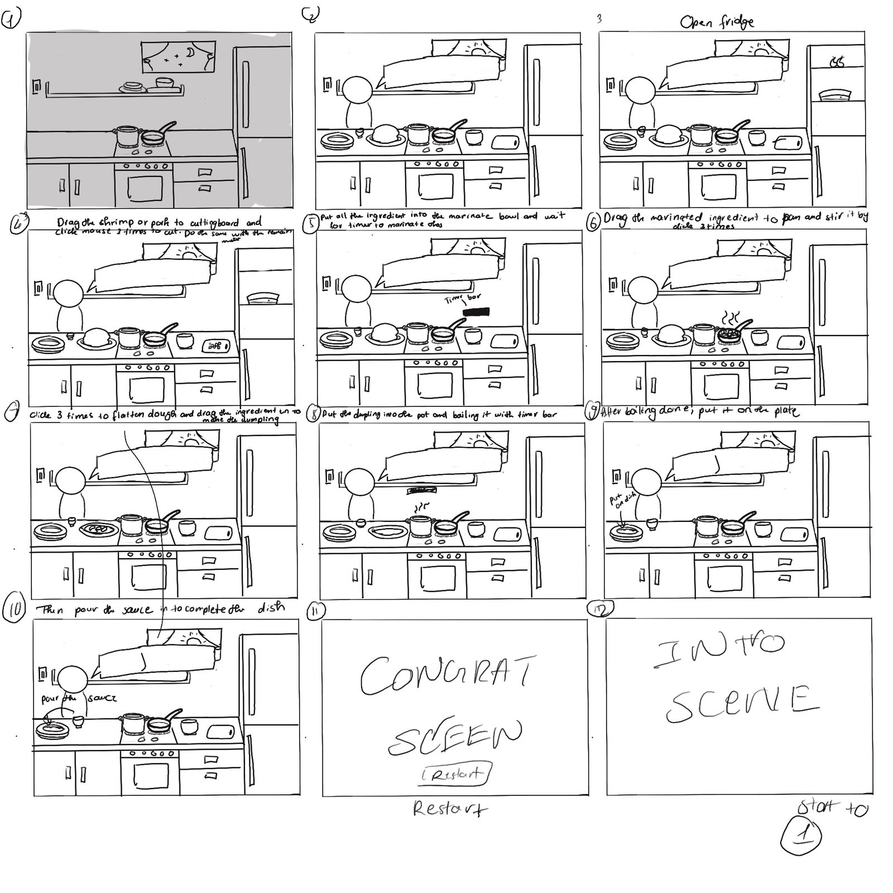
UI Design
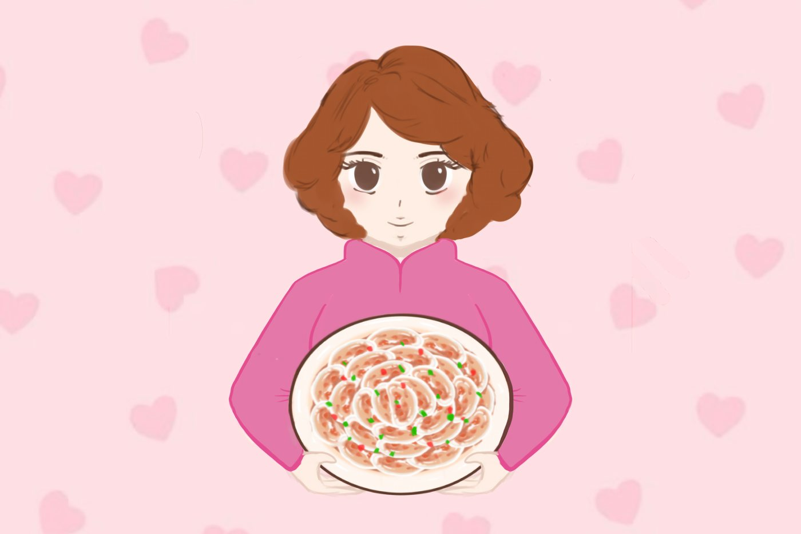
To create a cozy, warm look, I mainly used pastel colours, with a range of browns, pinks and reds. To draw the dish, I started from reference photos of Banh Bot Loc and redrew it in my own style. For the main character, I used my mom as inspiration, so she gives the simulator a personal, heartfelt presence.
Color Palette
Main visual
Mom
Banh Bot Loc
Drawing Assets
I drew every asset in the game myself, in the same soft pastel style. Each object, ingredient and button is its own image, so the code could place, swap and animate them separately.
Scenes — the kitchen you cook in
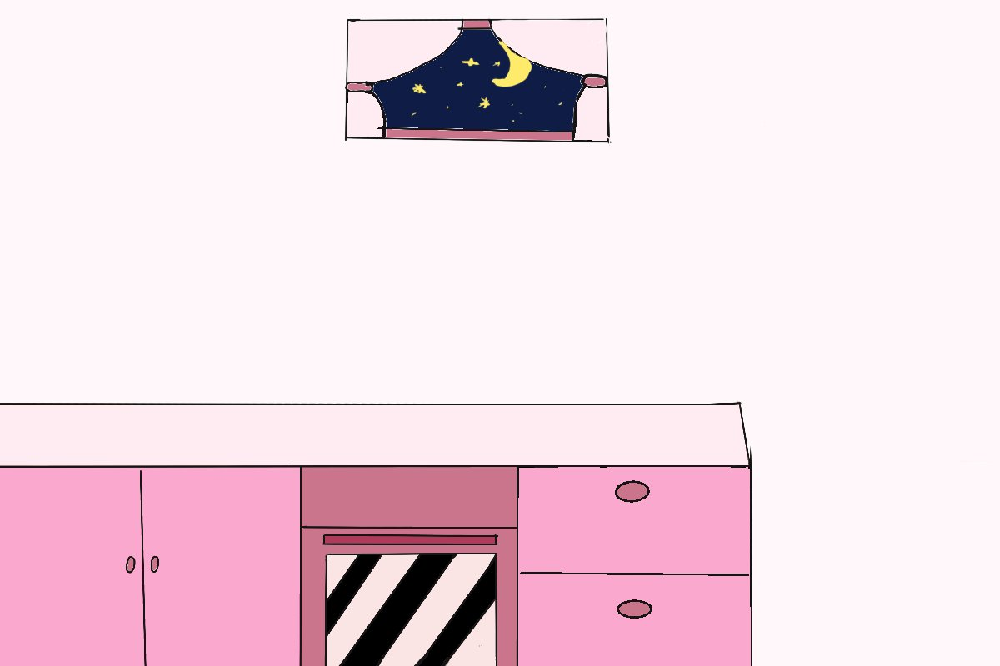
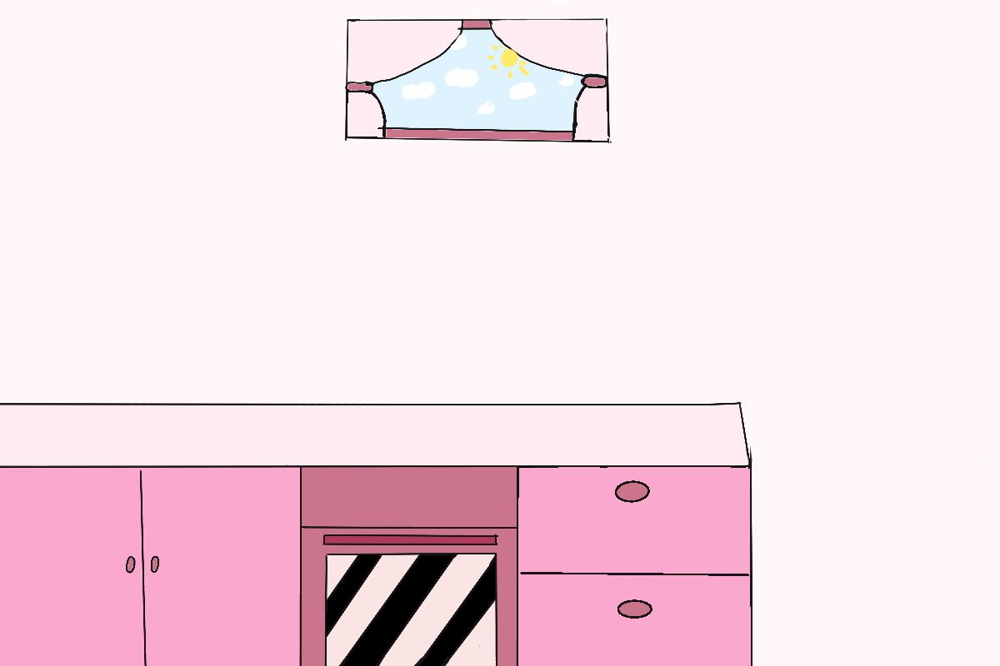
Characters — Mom and the finished dish
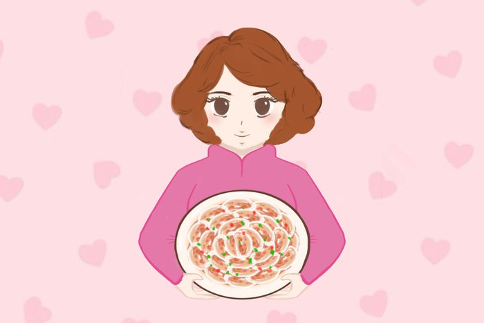
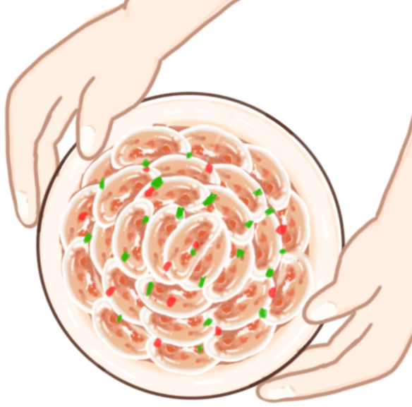
Kitchen — objects you click and drag onto
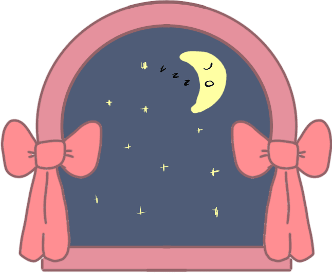
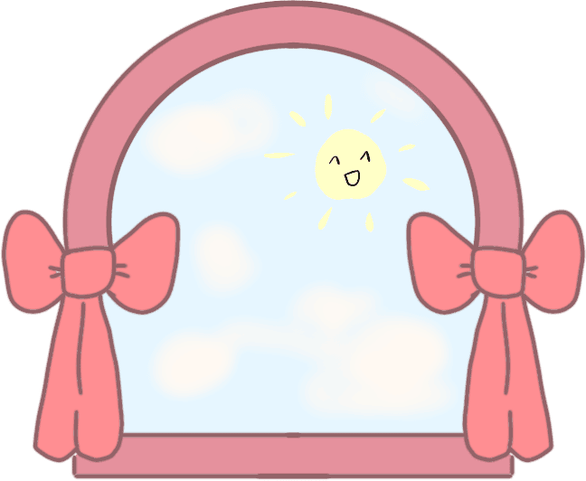
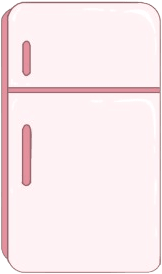
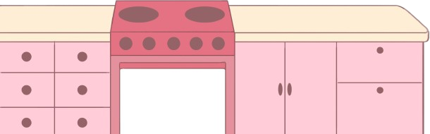
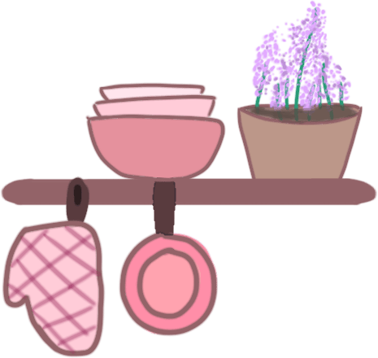
Ingredients — each one changes as you prep it
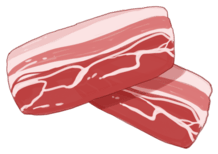
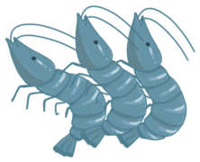
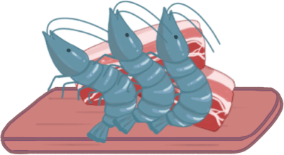
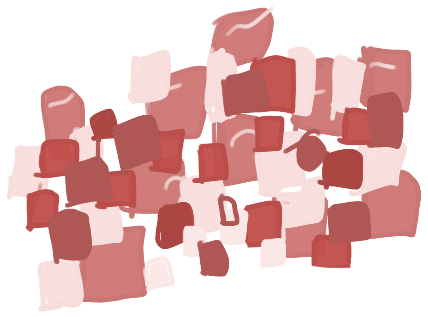
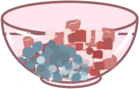
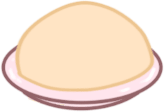
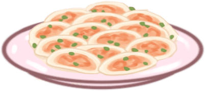
Buttons & Text — hover a button to see its hover state
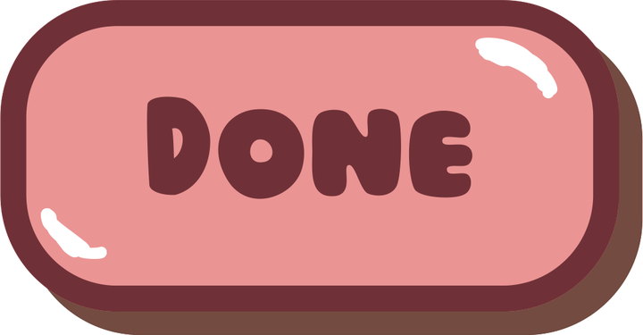
Final Design
After drawing every asset, I placed them to build a cozy, welcoming kitchen. From the pastel colours to the soft, hand-drawn textures, every piece was made to feel like cooking at home with someone you love.
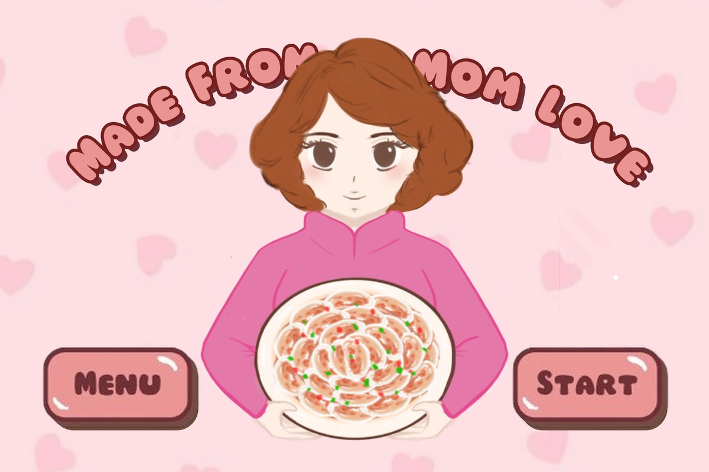
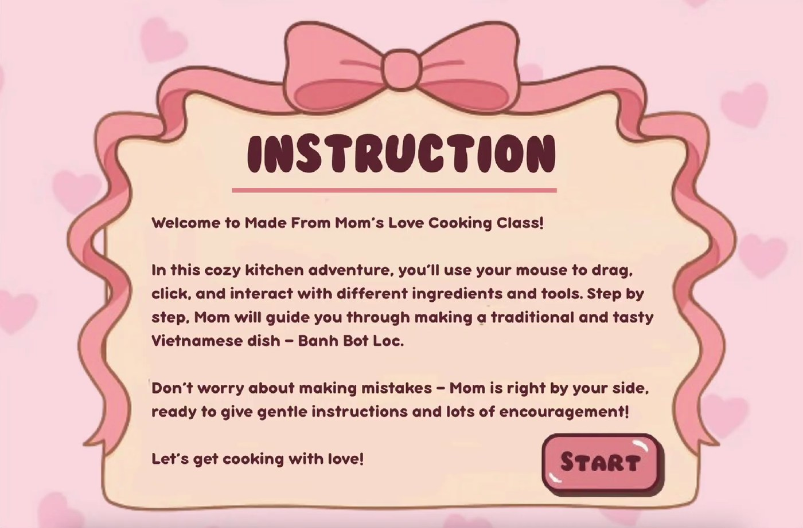
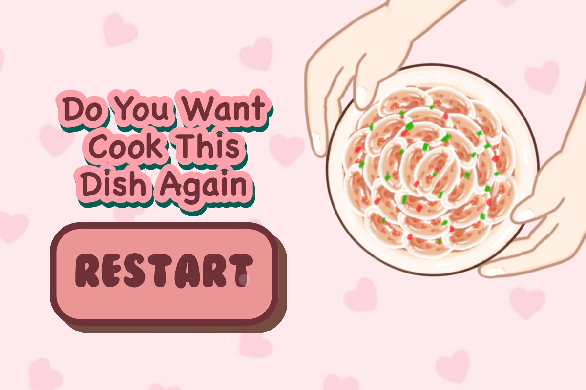
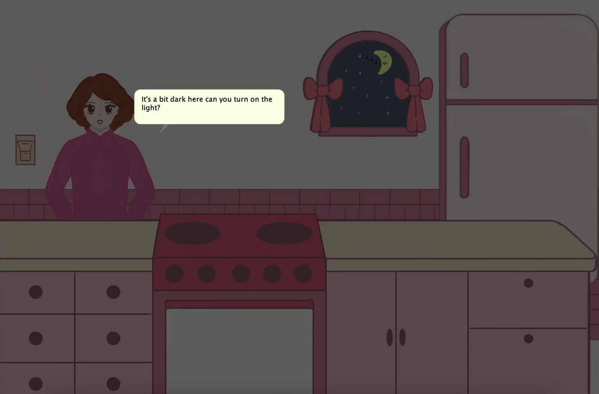
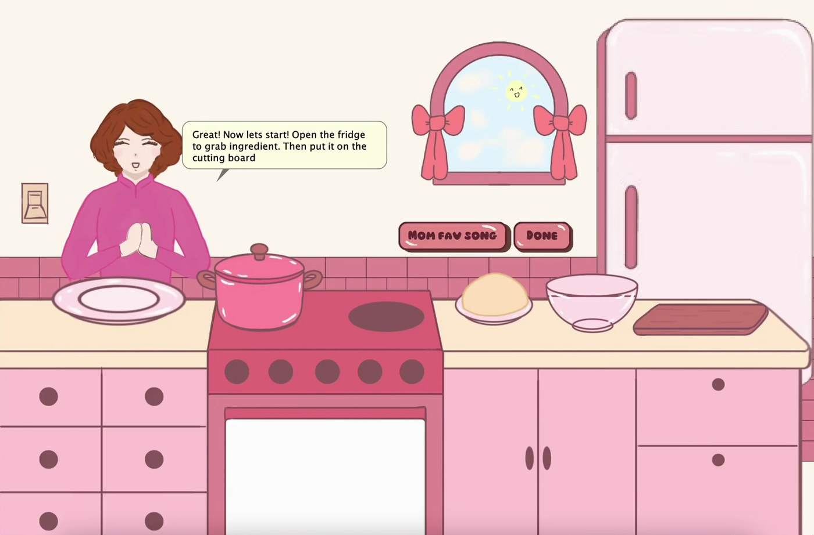
Light off Light onProgramming
I started by organising files into clear folders, so I knew exactly what to add, kept the project free of unneeded files, and could find assets quickly.
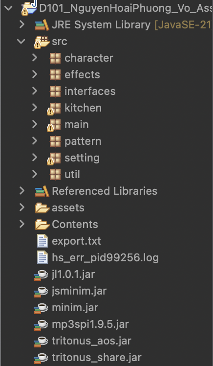
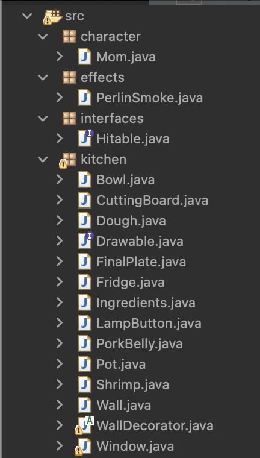
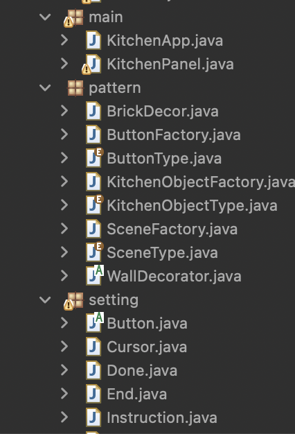
Code Structure
Built in Java with Swing. One panel redraws the scene every 30ms and switches between scenes as the player moves through the game.
How it's built
-
Scene states —
KitchenPaneltracks one game state, from the title screen through cooking to the end screen. - Mouse interaction — click, drag and hover listeners move ingredients, open the fridge and show hint tooltips.
- Hit detection — ingredients check when they're dropped on the cutting board to move the game forward.
- Restart — resets the fridge, board, light and every ingredient to its starting spot.
Object-oriented design
-
Inheritance —
PorkBellyandShrimpextendIngredients; the instruction and end screens extendIntro. -
Abstract buttons — every button
shares one
Buttonbase with its own image and click area. - Factory pattern — a button factory creates Start, Menu and Restart buttons by name.
-
Shared helpers —
ImageLoaderloads every asset in one place.
Process & Testing
How I worked
- Designed and built the core features and logic of the simulator.
- Tested at each stage for accuracy and usability.
- Found and fixed issues during development.
- Ran several rounds of testing and refinement to remove bugs.
- Followed the storyboard to keep the design and flow consistent.
Testing
- Played through the simulator at each stage to check its behaviour and flow.
- Got feedback from my instructor and classmates on confusing or illogical steps.
- Debugged throughout to catch errors early.
- Revised several times based on feedback to make it clearer.
- Checked that every step followed the intended order.
Challenges & Reflection
Challenges
- Turning real cooking steps into clear, interactive steps.
- Making the timing and order of events feel natural.
- Debugging unexpected behaviour when game elements interacted.
- Keeping the game easy to follow while staying true to the traditional recipe.
- Improving the experience from feedback without breaking existing features.
Reflection
This project was more than an assignment. It grew my coding skills and my appreciation for my culture. I learned to structure interactions, manage visual assets, and refine the experience through testing and feedback. Making a game about my heritage and my bond with my mom made it especially meaningful, and showed me how storytelling and technology can preserve culture and create emotional connections.
Demo
A short video showing how to play the simulator.